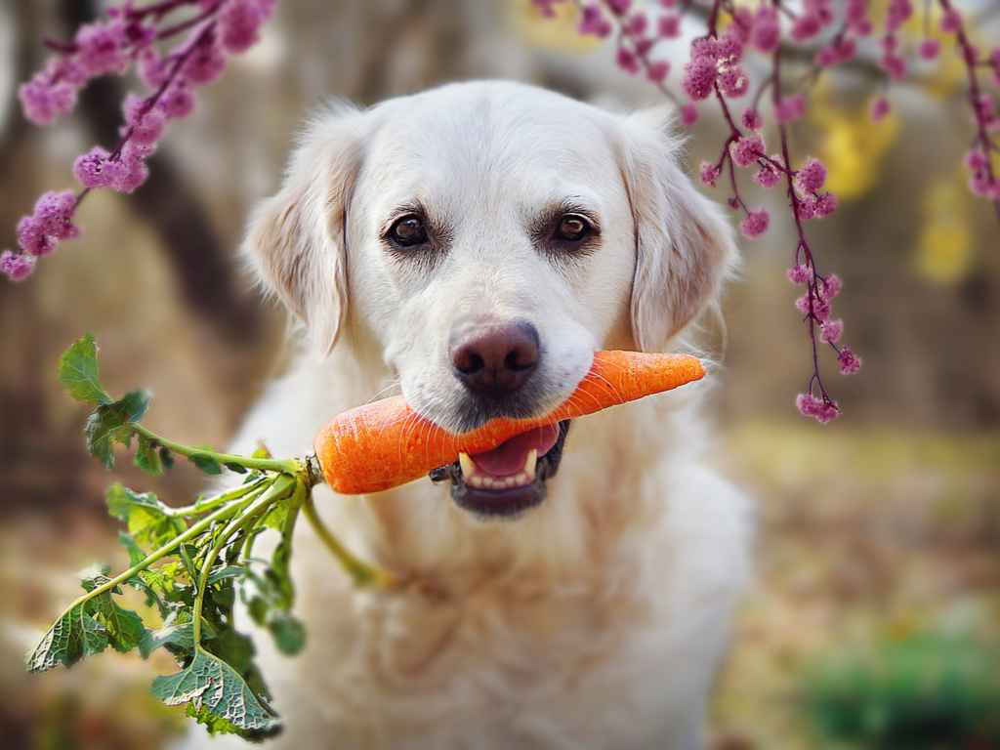

O que o cachorro pode comer além da ração?

Você está almoçando e chega o seu peludo, com cara de coitado e pedindo um pouquinho do seu almoço… Todo mundo já passou por isso, não é? A vontade de dividir o prato com o amigo pode até ser grande, mas é importante lembrar cachorro não pode comer qualquer tipo de alimento.
O ideal é dar ração de qualidade, voltada para a idade do seu pet. Contudo, para matar a sua vontade e a dele, existem alguns alimentos que podem ser oferecidos ao peludo. Claro que devem ser fornecidos em pequena quantidade, como substitutos do petisco e não da ração. Opte por pedaços pequenos e forneça apenas às vezes.
Quer deixar o seu cachorrinho feliz agora mesmo? Então conheça alguns alimentos que cachorro pode comer e divirta-se com a felicidade do seu peludo!
1. Cachorro pode comer abóbora
Se você tem uma dieta mais controlada e ingere muita batata-doce, pode comemorar, pois o seu peludo poderá acompanhá-lo! O alimento tem bastante vitamina E e pode ser oferecido, às vezes, ao pet.
Sirva cozida, morna ou fria, e sem tempero nenhum. Não coloque nem sal. Eles costumam gostar.
3. Banana também pode ser oferecida ao cão de estimação
O alimento é rico em potássio, vitamina B6 e magnésio. Caso o seu cachorro peça, enquanto você está comendo, ofereça um pedaço a ele.
Lembre-se de que a fruta deve estar descascada e pura, ou seja, sem açúcar. Não são todos os cães que comem. Caso ele cheire e não queira, não force. Apenas lembre-se de que esse alimento não está entre os preferidos do pet.
4. Brócolis
Que brócolis faz bem para a sua saúde e que é um alimento muito nutritivo, você já sabe! O melhor de tudo é que você pode oferecer esses nutrientes também para o seu animal de estimação.
Cachorro pode comer brócolis e aproveitar o zinco, ferro, potássio, entre outros nutrientes existentes no alimento. Cozinhe no vapor e ofereça sem tempero.
Alguns pets gostam de receber brócolis como petisco. Já outros, preferem misturado à ração. Descubra como o seu peludo mais gosta.
5. Cenoura
Fonte de vitamina A e de betacaroteno, a cenoura é amada por alguns pets. O cachorro pode comer crua, para roer e se divertir, ou cozida, sem tempero.
O interessante de oferecer crua é que além de ele se entreter mastigando, ao roer, ela ajuda a limpar os dentes do pet.
6. Chuchu
Quer agradar o peludo? Ofereça chuchu cozido. A maioria deles adora e não há restrição.
Cozinhe sem tempero e ofereça como substituto do petisco ou misturado na ração. Como é pouco calórico, pode ser oferecido até para os pets que estão acima do peso.
7. Maçã
Também pode ser dada ao cachorro, sem casca e em pedacinhos. É ótima fonte de fibras e de vitaminas B, C e E. Retire a semente e o miolo.